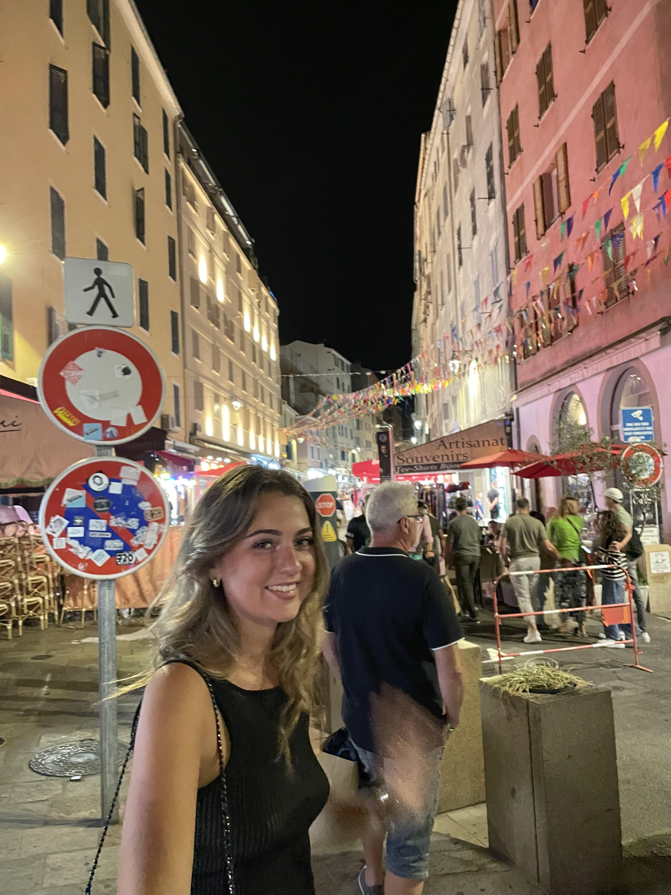

I'm currently enrolled in the Grande Ecole program at the IESEG school of management and in a bachelor's degree in eco-management at the CYU faculty, and I'm a dynamic, motivated young woman. I'm passionate about jewelry and perfumery. And I dream of traveling around the world to discover new cultures and landscapes.
I love to travel. My favorite trip was to Mexico. As much for its beautiful landscapes as for its cultural richness, Mexico has left its mark on me. I had the opportunity to meet some very nice people. That's why traveling is so important to me. It's a way of opening up to the world.
For me, jewelry and perfumery are very special arts. They embody delicacy and precision. Each piece of jewelry and each fragrance is the result of meticulous craftsmanship, where creativity meets technique. I appreciate the way these creations embody luxury, capturing the essence of elegance and emotion, while revealing a timeless beauty.
If you'd like to follow my progress, have access to my CV, or take a look at my career path, please click on the link below, which will take you directly to my LinkedIn profile.
Discover my LinkedIn page